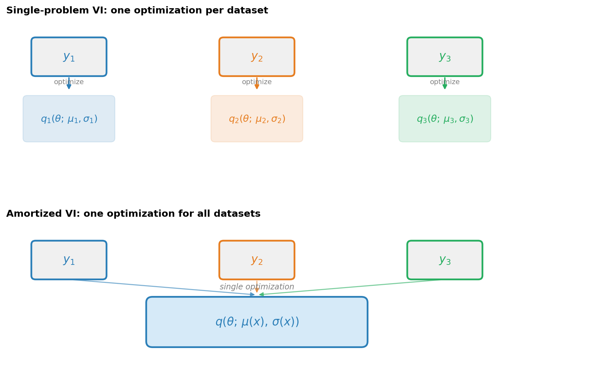
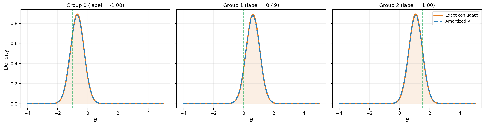
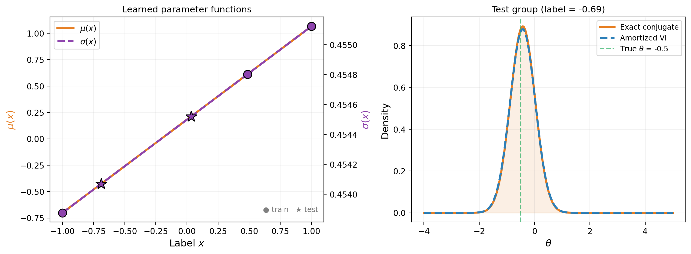

Amortized Variational Inference
PyApprox Tutorial Library
Learning a single model that maps any dataset to its approximate posterior, amortizing the cost of inference across problems.
TipDownload Notebook
Learning Objectives
After completing this tutorial, you will be able to:
- Explain the difference between single-problem and amortized variational inference
- Describe how polynomial basis expansions turn the variational parameters into functions of the data
- Use summary statistics to map raw observations to fixed-size labels for amortization
- Construct a discrete-group ELBO that jointly optimizes across multiple datasets
- Verify that an amortized model recovers exact conjugate posteriors for training data
- Test generalization: evaluate the amortized model on held-out data it was never trained on
- Compare different summary statistics (raw data vs. mean) and understand the tradeoffs
Prerequisites
Complete Choosing the Variational Family before this tutorial.
The Repeated Inference Problem
In the previous tutorials, each VI run produced a posterior for one fixed dataset. But many applications involve solving the same type of inference problem for many datasets. For example:
- Multiple beam specimens: each tested beam produces different observations, but the model and prior are the same
- Sensor networks: each sensor location gives a different measurement, requiring a separate posterior
- Experimental campaigns: each experimental configuration yields different data
Running VI independently for each dataset wastes effort, because the posteriors share the same structure — only the data changes. Amortized VI addresses this by learning a single function that maps any dataset to its approximate posterior.
From Constants to Functions
In single-problem VI, the variational distribution \(q(\theta;\, \mu, \sigma)\) has fixed parameters \(\mu\) and \(\sigma\). In amortized VI, we make these parameters functions of the data \(x\):
\[ q(\theta;\, \mu(x), \sigma(x)) \]
where \(\mu(x)\) and \(\sigma(x)\) are parameterized by polynomial basis expansions. The optimization variables are now the expansion coefficients, not the distribution parameters directly.
For a degree-1 expansion with input \(x \in [-1, 1]\):
\[ \mu(x) = c_0 + c_1 \, P_1(x), \qquad \log\sigma(x) = d_0 + d_1 \, P_1(x) \]
where \(P_1\) is the first orthonormal polynomial and \(c_0, c_1, d_0, d_1\) are the tunable coefficients. This is exactly what BasisExpansion with degree > 0 provides. Figure 1 illustrates the idea.
Setup: A Linear Gaussian Model
To verify that amortized VI works correctly, we use a problem with a known exact answer: a linear Gaussian model where the conjugate posterior is available in closed form.
The model is \(y = A \theta + \varepsilon\) with:
- Prior: \(\theta \sim \mathcal{N}(0, 1)\) (1D latent variable)
- Observation matrix: \(A = [1]\) (identity)
- Noise: \(\varepsilon \sim \mathcal{N}(0, 0.5)\)
For this model, the posterior given observations \(\{y_i\}_{i=1}^n\) is Gaussian with mean and variance that depend linearly on the sufficient statistic \(\bar{y} = \frac{1}{n} \sum_i y_i\). A degree-1 polynomial can represent this mapping exactly.
from pyapprox.util.backends.numpy import NumpyBkd
from pyapprox.probability.conditional.gaussian import ConditionalGaussian
from pyapprox.probability.conditional.joint import ConditionalIndependentJoint
from pyapprox.probability.joint.independent import IndependentJoint
from pyapprox.probability.univariate.gaussian import GaussianMarginal
from pyapprox.probability.univariate import UniformMarginal
from pyapprox.probability.likelihood.gaussian import (
DiagonalGaussianLogLikelihood,
MultiExperimentLogLikelihood,
)
from pyapprox.inverse.conjugate.gaussian import (
DenseGaussianConjugatePosterior,
)
from pyapprox.inverse.variational.elbo import make_discrete_group_elbo
from pyapprox.inverse.variational.fitter import VariationalFitter
from pyapprox.inverse.variational.summary import (
IdentityTransform,
MeanAggregation,
TransformAggregateSummary,
)
from pyapprox.surrogates.affine.basis import OrthonormalPolynomialBasis
from pyapprox.surrogates.affine.expansions import BasisExpansion
from pyapprox.surrogates.affine.indices import compute_hyperbolic_indices
from pyapprox.surrogates.affine.univariate import create_bases_1d
bkd = NumpyBkd()
obs_matrix = bkd.asarray([[1.0]])
noise_var = 0.5
n_obs_per_group = 2 # observations per groupWhat Is a Group?
A group is a distinct inference problem that shares the same model structure, prior, and noise model as every other group, but has its own observed data. Each group therefore has its own posterior.
To build intuition, consider a beam manufacturer testing specimens off a production line. Each specimen has a slightly different Young’s modulus \(E\), and each is loaded and its tip deflection measured. The forward model, prior on \(E\), and noise model are the same across specimens — only the measurements differ. Each specimen is one group.
Groups vs. vector-valued observations. A common source of confusion is the difference between having multiple observations within one group and having multiple groups:
- Multiple observations within one group means repeating the experiment on the same specimen (same underlying \(\theta\)). The observations are combined into a single likelihood \(p(y_1, y_2, \ldots, y_n \mid \theta)\), and inference produces one posterior for that specimen. Adding more observations to a group tightens the posterior for that one \(\theta\).
- Multiple groups means testing different specimens (different underlying \(\theta\)). Each group has its own likelihood and its own posterior. Amortized VI learns a mapping from a summary of each group’s data to the corresponding posterior, so that inference for a new specimen requires no re-optimization.
Groups can have vector-valued observations. Each group’s data can consist of multiple measurements — for example, both tip deflection and mid-span deflection measured on the same specimen. The MultiExperimentLogLikelihood class handles this by summing the log-likelihood across all observations within a group. Labels are then computed from the per-group observation summaries (e.g., their means), and the label dimension equals the observation dimension.
The table below summarizes:
| Single-problem VI | Amortized VI | |
|---|---|---|
| Datasets | 1 | \(K\) (one per group) |
| Posterior | 1 fixed distribution | \(K\) distributions, parameterized by label |
| Observations per dataset | Any number (scalar or vector) | Any number (scalar or vector) |
| Optimization | Per-dataset | Once for all groups |
Summary Statistics: From Observations to Labels
The variational parameter functions \(\mu(x)\) and \(\sigma(x)\) need a fixed-size input \(x\) (the label), but each group can have a different number of observations. A summary statistic bridges this gap by mapping raw observations to a fixed-size vector.
PyApprox provides a composable design with two pieces:
- Transform — per-observation feature extraction (e.g., identity, polynomial features)
- Aggregation — reduce variable-length features to a fixed-size vector (e.g., mean, flatten)
These compose via TransformAggregateSummary:
# Mean summary: identity transform + mean aggregation
nobs_dim = 1 # each observation is a scalar
summary_mean = TransformAggregateSummary(
IdentityTransform(nobs_dim),
MeanAggregation(nobs_dim, bkd),
bkd,
)
# Test it: summary of 3 observations
test_obs = bkd.asarray([[1.0, 3.0, 5.0]])
print(f"Observations: {bkd.to_numpy(test_obs).flatten()}")
print(f"Mean summary: {float(summary_mean(test_obs)[0, 0]):.1f}")
print(f"Label dimensions: {summary_mean.nlabel_dims()}")Observations: [1. 3. 5.]
Mean summary: 3.0
Label dimensions: 1The table below shows the built-in options:
| Approach | Transform | Aggregation | Label dims | Variable \(n\)? |
|---|---|---|---|---|
| Mean | IdentityTransform |
MeanAggregation |
nobs_dim |
Yes |
| Mean + variance | IdentityTransform |
MeanAndVarianceAggregation |
2 * nobs_dim |
Yes |
| Raw data | IdentityTransform |
FlattenAggregation(n_obs) |
nobs_dim * n_obs |
No |
NoteChoosing a summary
The mean summary is the natural choice for linear Gaussian models, where the sample mean is a sufficient statistic. For models where the posterior depends on higher-order features of the data (e.g., variance or extreme values), richer summaries may be needed. The raw-data approach (flattening) retains all information but requires a fixed observation count and produces higher-dimensional labels.
Building the Training Groups
We create \(K\) training groups by choosing different true parameter values \(\theta_k\) and generating noisy observations for each.
# Generate K groups of observations
K = 3 # number of training groups
np.random.seed(42)
# True parameters from a grid over the prior
theta_true = np.array([-1.0, 0.0, 1.5])
# Generate noisy observations for each group
all_obs = []
for k in range(K):
y_k = theta_true[k] + np.random.normal(0, np.sqrt(noise_var), n_obs_per_group)
all_obs.append(bkd.asarray(y_k.reshape(1, -1))) # (1, n_obs)
print("Training groups:")
for k in range(K):
obs_np = bkd.to_numpy(all_obs[k]).flatten()
print(f" Group {k}: theta_true = {theta_true[k]:+.1f}, "
f"obs = {obs_np}, "
f"mean(obs) = {obs_np.mean():.3f}")Training groups:
Group 0: theta_true = -1.0, obs = [-0.64877005 -1.09776762], mean(obs) = -0.873
Group 1: theta_true = +0.0, obs = [0.45798496 1.07694474], mean(obs) = 0.767
Group 2: theta_true = +1.5, obs = [1.33442856 1.33444017], mean(obs) = 1.334make_discrete_group_elbo handles the label computation automatically: it applies the summary statistic to each group’s observations and normalizes the results to \([-1, 1]\) for the polynomial basis.
Building the Amortized ELBO
The key difference from single-problem VI is make_discrete_group_elbo, which constructs a joint objective over all \(K\) groups. Pass the raw observations and summary statistic — the function computes and normalizes the labels internally.
def _make_expansion(bkd, degree, coeff=0.0):
"""BasisExpansion with given degree (1D input, 1 QoI)."""
marginals = [UniformMarginal(-1.0, 1.0, bkd)]
bases_1d = create_bases_1d(marginals, bkd)
indices = compute_hyperbolic_indices(1, degree, 1.0, bkd)
basis = OrthonormalPolynomialBasis(bases_1d, bkd, indices)
exp = BasisExpansion(basis, bkd, nqoi=1)
coeffs = np.zeros((degree + 1, 1))
coeffs[0, 0] = coeff
exp.set_coefficients(bkd.asarray(coeffs))
return exp
# Degree-1 parameter functions: mu(x), log_sigma(x)
degree = 1
mean_func = _make_expansion(bkd, degree)
log_stdev_func = _make_expansion(bkd, degree)
cond = ConditionalGaussian(mean_func, log_stdev_func, bkd)
var_dist = ConditionalIndependentJoint([cond], bkd)
# Prior
vi_prior = IndependentJoint([GaussianMarginal(0.0, 1.0, bkd)], bkd)
# Per-group log-likelihoods
noise_variances = bkd.full((1,), noise_var)
base_lik = DiagonalGaussianLogLikelihood(noise_variances, bkd)
log_lik_fns = []
for k in range(K):
multi_lik = MultiExperimentLogLikelihood(base_lik, all_obs[k], bkd)
log_lik_fns.append(multi_lik.logpdf)
# Base samples (Monte Carlo)
nsamples = 500
np.random.seed(42)
base_nodes = bkd.asarray(np.random.normal(0, 1, (1, nsamples)))
base_weights = bkd.full((1, nsamples), 1.0 / nsamples)
# Build the amortized ELBO with summary statistic
elbo = make_discrete_group_elbo(
var_dist, log_lik_fns, vi_prior,
base_nodes, base_weights, bkd,
observations=all_obs, summary=summary_mean,
)
n_params = elbo.nvars()
print(f"Variational parameters: {n_params}")
print(f" (degree-{degree} expansion: {degree + 1} coeffs for mean "
f"+ {degree + 1} for log_stdev = {2 * (degree + 1)})")
print(f"Joint quadrature points: {K} groups x {nsamples} base = "
f"{K * nsamples}")Variational parameters: 4
(degree-1 expansion: 2 coeffs for mean + 2 for log_stdev = 4)
Joint quadrature points: 3 groups x 500 base = 1500# Optimize
fitter = VariationalFitter(bkd)
result = fitter.fit(elbo)
print(f"Negative ELBO: {result.neg_elbo():.4f}")
print(result)Negative ELBO: 2.4477
VIFitResult(neg_elbo=2.4477, success=True)Verifying on Training Groups
After optimization, we evaluate the amortized model at each training label and compare to the exact conjugate posterior. We need the normalization constants to map observation summaries to labels at test time.
from pyapprox.inverse.variational.elbo import _compute_normalized_labels
# Recover the normalization constants used during ELBO construction
labels, label_mid, label_scale = _compute_normalized_labels(
all_obs, summary_mean, bkd,
)
labels_np = bkd.to_numpy(labels).flatten()
# Exact conjugate posteriors
prior_mean = bkd.asarray([[0.0]])
prior_cov = bkd.asarray([[1.0]])
noise_cov = bkd.asarray([[noise_var]])
conjugate = DenseGaussianConjugatePosterior(
obs_matrix, prior_mean, prior_cov, noise_cov, bkd,
)
print(f"{'Group':>6} | {'Exact mean':>11} {'Exact std':>10} | "
f"{'VI mean':>9} {'VI std':>8}")
print("-" * 60)
for k in range(K):
# Exact
conjugate.compute(all_obs[k])
exact_mean = float(conjugate.posterior_mean()[0, 0])
exact_var = float(conjugate.posterior_covariance()[0, 0])
exact_std = math.sqrt(exact_var)
# VI: evaluate parameter functions at label_k
label_k = bkd.asarray([[labels_np[k]]])
vi_mu = float(mean_func(label_k)[0, 0])
vi_log_sig = float(log_stdev_func(label_k)[0, 0])
vi_std = math.exp(vi_log_sig)
print(f"{k:>6} | {exact_mean:>+11.4f} {exact_std:>10.4f} | "
f"{vi_mu:>+9.4f} {vi_std:>8.4f}") Group | Exact mean Exact std | VI mean VI std
------------------------------------------------------------
0 | -0.6986 0.4472 | -0.7011 0.4539
1 | +0.6140 0.4472 | +0.6115 0.4548
2 | +1.0675 0.4472 | +1.0651 0.4551Figure 2 shows the amortized VI posteriors at each training group compared to the exact conjugate posteriors.

Generalization to Unseen Data
The real payoff of amortization is generalization: evaluating the learned parameter functions at labels that were not part of the training set, without any additional optimization. For the linear Gaussian model, the map from observations to posterior parameters is affine, so a degree-1 polynomial can represent it exactly — generalization should be perfect.
# Generate test data from previously unseen parameter values
np.random.seed(123)
theta_test = np.array([-0.5, 0.7, 1.2])
K_test = len(theta_test)
test_obs_list = []
test_labels_list = []
label_mid_np = float(bkd.to_numpy(label_mid)[0, 0])
label_scale_np = float(bkd.to_numpy(label_scale)[0, 0])
for t in range(K_test):
y_test = theta_test[t] + np.random.normal(
0, np.sqrt(noise_var), n_obs_per_group,
)
test_obs_list.append(bkd.asarray(y_test.reshape(1, -1)))
# Apply the same summary + normalization used during training
raw_label = float(summary_mean(test_obs_list[-1])[0, 0])
test_labels_list.append((raw_label - label_mid_np) / label_scale_np)
print(f"{'Test':>6} | {'Exact mean':>11} {'Exact std':>10} | "
f"{'VI mean':>9} {'VI std':>8} | {'Mean err':>9}")
print("-" * 72)
for t in range(K_test):
label_test_val = test_labels_list[t]
# Exact posterior
conjugate.compute(test_obs_list[t])
exact_mean = float(conjugate.posterior_mean()[0, 0])
exact_std = math.sqrt(float(conjugate.posterior_covariance()[0, 0]))
# Skip if label is outside training range
if abs(label_test_val) > 1.0:
print(f"{t:>6} | (label {label_test_val:.2f} outside [-1, 1], skipped)")
continue
label_test = bkd.asarray([[label_test_val]])
vi_mu = float(mean_func(label_test)[0, 0])
vi_std = math.exp(float(log_stdev_func(label_test)[0, 0]))
mean_err = abs(vi_mu - exact_mean)
print(f"{t:>6} | {exact_mean:>+11.4f} {exact_std:>10.4f} | "
f"{vi_mu:>+9.4f} {vi_std:>8.4f} | {mean_err:>9.4f}") Test | Exact mean Exact std | VI mean VI std | Mean err
------------------------------------------------------------------------
0 | -0.4250 0.4472 | -0.4275 0.4541 | 0.0025
1 | +0.2140 0.4472 | +0.2115 0.4545 | 0.0025
2 | (label 1.22 outside [-1, 1], skipped)Figure 3 shows the learned parameter functions and test-point evaluations.

How make_discrete_group_elbo Works
The joint quadrature over \(K\) groups and \(M\) base samples creates \(K \times M\) evaluation points. The layout is:
\[ \underbrace{[\text{group}_0 \times M,\; \text{group}_1 \times M,\; \ldots,\; \text{group}_{K-1} \times M]}_{K \times M \text{ total points}} \]
For each group \(k\), the label is repeated \(M\) times alongside the \(M\) base samples. The joint log-likelihood dispatches to each group’s callable on its contiguous slice. Each group contributes equally to the ELBO via weights \(w_k = \frac{1}{K} w_{\text{base}}\).
NoteWhy the label normalization matters
The polynomial basis expansions are defined over \([-1, 1]\). Mapping the observation summaries to this range ensures the polynomials operate in their well-conditioned domain. For observation values that vary widely, unnormalized labels would produce poorly conditioned polynomial evaluations and unstable optimization. make_discrete_group_elbo handles this normalization automatically when you pass observations and summary.
Why Train Groups Simultaneously?
In single-problem VI, each group gets its own independent parameters \(\mu_k\) and \(\sigma_k\). With \(K\) groups you run \(K\) separate optimizations, each with 2 parameters, and each posterior learns nothing from the others.
In amortized VI, all groups share a single polynomial:
\[ \mu(x) = c_0 + c_1 P_1(x), \qquad \log\sigma(x) = d_0 + d_1 P_1(x) \]
You optimize 4 coefficients \((c_0, c_1, d_0, d_1)\) total, regardless of \(K\). The polynomial must fit all groups simultaneously, which has several consequences:
Smooth structure is enforced. The posterior parameters must vary smoothly as a function of the label. Each group’s data constrains the shared polynomial, preventing overfitting to any single group’s noise.
Generalization is possible. Once trained, evaluating \(\mu(x_{\text{new}})\) and \(\sigma(x_{\text{new}})\) at a new label costs only a polynomial evaluation — no re-optimization. Separate training gives you nothing at unseen data.
Statistical efficiency improves. With \(K\) groups sharing 4 coefficients, each group contributes information about the global structure. A degree-1 polynomial needs at least 2 groups to determine the slope; adding more groups reduces the effect of noise in any single group’s observations.
Computation is amortized. One optimization of 4 parameters replaces \(K\) optimizations of 2 parameters each. For large \(K\) this is a significant speedup, and the cost per new test point is just a polynomial evaluation.
The tradeoff: if the true map from data to posterior does not fit the chosen polynomial degree (e.g., a highly nonlinear relationship with a degree-1 model), the shared structure becomes a constraint rather than a benefit. In that case, increase the degree or fall back to separate training.
When Amortization Pays Off
| Scenario | Prefer |
|---|---|
| One or a few datasets | Single-problem VI (simpler setup) |
| Many datasets with the same model | Amortized VI (train once, evaluate instantly) |
| Need to evaluate at new datasets at test time | Amortized VI (no re-optimization needed) |
| Nonlinear posterior dependence on data | Amortized VI with higher-degree expansions |
| Posterior structure varies drastically across datasets | Single-problem VI (one model may not fit all) |
The linear Gaussian example used a degree-1 expansion because the posterior-parameter map is affine. For nonlinear models (e.g., the beam), higher-degree expansions may be needed to capture the nonlinear dependence of the posterior on the observations.
Key Takeaways
- Amortized VI makes the variational parameters functions of the data, learning a single model that maps any dataset to its approximate posterior
- Summary statistics map raw observations to fixed-size labels via a composable transform + aggregation design. The mean summary is sufficient for linear Gaussian models; richer summaries handle nonlinear or high-dimensional settings
- In PyApprox, this is implemented by using
BasisExpansionwithdegree > 0insideConditionalGaussian, andmake_discrete_group_elboto construct the joint objective - The degree of the expansion controls how complex the data-to-posterior mapping can be: degree-1 handles affine maps (sufficient for linear Gaussian models), higher degrees handle nonlinear maps
- The amortized model generalizes to unseen data within the training label range without re-optimization
- Amortized VI is most valuable when you have many datasets sharing the same model structure, or when you need instant posterior evaluation at test time
Exercises
Increase the number of training groups to \(K = 5\) and \(K = 10\). Does the generalization error at test points decrease?
Replace the degree-1 expansion with degree-0 (constant). What happens? The model can no longer vary the posterior across groups — verify that the negative ELBO is substantially worse.
Try degree-2 expansions. For this linear Gaussian model, the extra flexibility is unnecessary — verify that the degree-2 result matches degree-1, and that the additional parameters are near zero.
Use
MeanAndVarianceAggregationinstead ofMeanAggregation. For this linear Gaussian model with fixed \(n\), the variance is not informative — verify that the results are similar but the label dimension doubles.(Challenge) Modify the example to use a nonlinear observation model \(y = \sin(\theta) + \varepsilon\) instead of \(y = \theta + \varepsilon\). The posterior-parameter map is no longer affine. Compare degree-1 and degree-2 expansions: does degree-2 improve generalization?
Next Steps
The variational inference tutorial series is complete. For related topics:
- From Data to Parameters: Introduction to Bayesian Inference — Where it all started
- Sampling the Posterior with MCMC — The sampling-based alternative
- Practical MCMC: Metropolis-Hastings and DRAM — Advanced MCMC methods